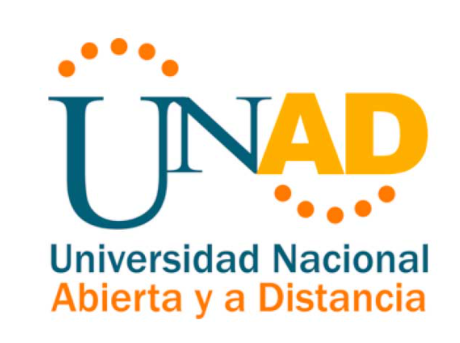

OBJETIVO GENERAL1. Crear un OVI CONTENIDO HTML SELECTION,ASIDE, FOOTER Y ARTICLE2. Aprender como se crea un mockup desarrollando la actividad completa propuesta en la unidad OBJETIVOS ESPECIFICOS1. aprender nuevos conceptos de html2. Desarrollar nuevos conocimientos referente a SELECTION,ASIDE, FOOTER Y ARTICLE. 3. Identificar las diversas utilidades de las diferentes herramientas dadas por Html. TEMATICAS1. estructura basica de html2. Aplicacion de elementos html en el OVI. 3. elementos basicos de css3. 4. Aplicacion de elementos BASICOS de css3 en nuestro OVI. 5. Aplicacion de diseños y estilos en nuestro proyecto OVI. |
 |